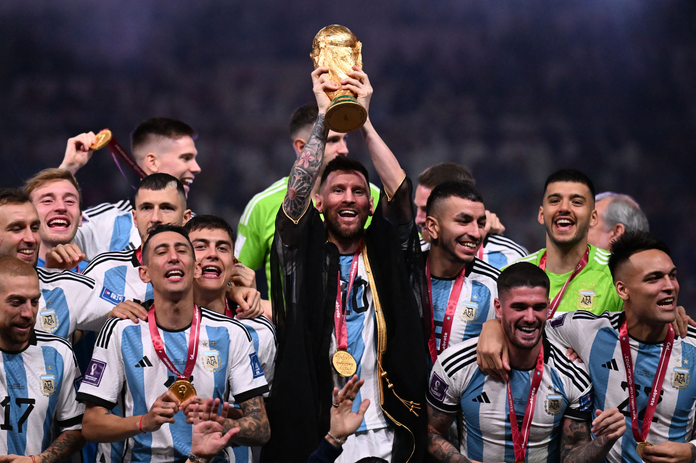
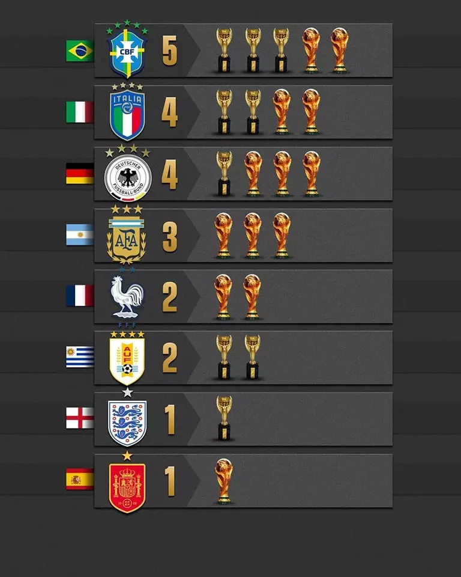

Player of the tournament, Lionel Messi, lifting the World Cup trophy
The 2022 world cup final ended 3-3 after over time, with Argentina finally clinching their title
4-2 in a penalty shootout. Argentina started the game well with Messi scoring a penalty in the 23rd minute
and Di Maria adding another in the 36th minute. Argentina were sailing to victory until Kylian Mbappe striked in the 80th minute.
And, then again in the 81st minute through a penalty. The match headed into extra time and in the 108th minute Messi scored again. But, once again,
Mbappe scored in the 118th minute through a penalty. In the final minutes of the game, strongi Martinez made a crucial save 1-1 against Kolo Muani in the 123rd minute.
The match headed into penalites were Argetina won 4-2.
Awards
The Main Award Winners
Golden Ball
Lionel Messi
Silver Ball
Kylian Mbappe
Bronze Ball
Luka Modrix
Golden Boot
Kylian Mbappe
Silver Boot
Lionel Messi
Bronze Boot
Olivier Giroud
Golden Glove
Emiliano Martinez
Young Player Award
Enzo Fernandez
Fair Play Trophy
England
Implications

Most World Cup Wins by Country
The 2022 World Cup Final holds significant importance in the world of soccer. Firstly, Argentina
won there third title, and their first since 1986, ending a 36-year drought; increasing their status
as one of the elite nations. With a hattrick in the final, Kylian Mbappe showcased his talent and secured the
Golden Boot and Silver Ball. Showing his immense potential and that he will be the one to watch in this next generation.
With his pivotal role in the final, and a Golden Ball and Silver Boot, Lionel Messi secured his place as the Greatest of
All Time. His role the in the tournament would also lead to his record-8th Balon d'Or.